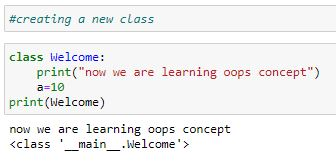
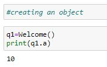
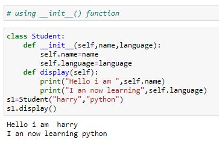
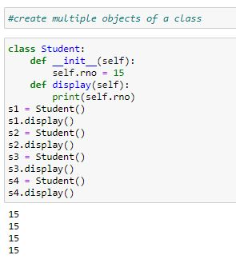

Oops concept in python
Python is an object-oriented programming language. It allows us to develop applications using an Object Oriented approach. In Python, we can easily create and use classes and objects.
Major principles of object-oriented programming system are given below.
1) Class
2) Object
3) methods
4) Inheritance
5) Polymorphism
6) Data Abstraction
7) Encapsulation
Class
Any entity that exists physically in the real world and which requires some memory will be called as an object.
Every object contains some attributes (properties) and some behaviours(actions). The attributes are the data or information that will describe the object and the behaviours will perform some tasks or operations on the attributes(data).
Example :
If Car is a class, then Audi A6 is an object of the Car class. All cars share similar features like 4 wheels, 1 steering wheel, windows, breaks etc. Audi A6 (The Car object) has all these features.
Syntax
class classname(object):
attributes
def __init__(self):
def method1():
def method2():
A class definition starts with keyword class and followed by class name.
After class name, we can give object in brackets
Object is super class for all the classes in python, we can give or omit it.
Inside the class with some indentation provide attributes, constructor and methods.
Attributes are variables which store data.
__init__(self) is constructor which initialises attributes of class,it takes self as parameter which is the instance of current class.
Every method also takes self as the first parameter.

Object
A class is a collection of common properties and common actions of a group of objects.
A class can be considered as a plan or a blue print or a model for creating the objects. For a class we can create any number of objects and without a class object creation will not be possible.
An Object is an instance of a class.
All the object oriented programming concepts are derived from the real world, from the human being lives so that programming becomes simpler. The programmer can understand the concepts easily an implement them without any difficulty.
syntax
Object_name=classname()

When object is created ,it allocates memory internally, and it calls constructor implicitly by passing address of object as self parameter to __init__(self)(constructor)
And finally that address is returned to variable on left hand side.

Self
Self is the default variable which is always pointing to current object. By using self we can access instance variables and instance methods of object.
